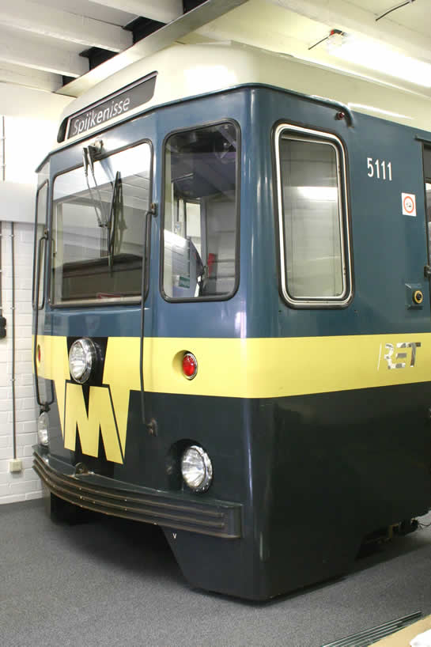
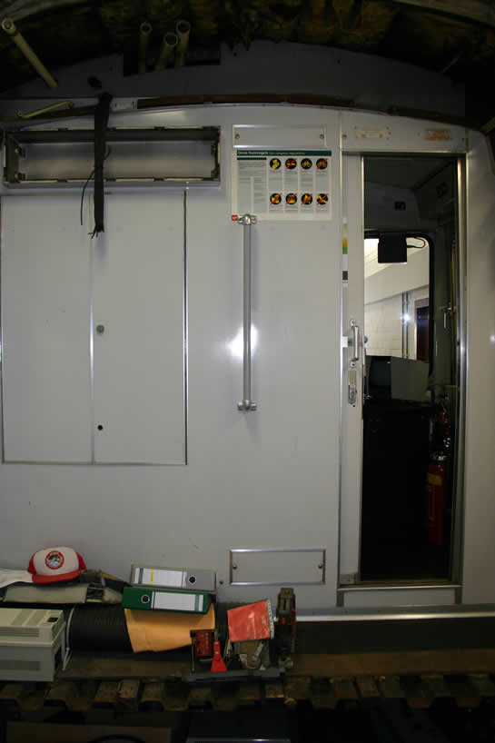
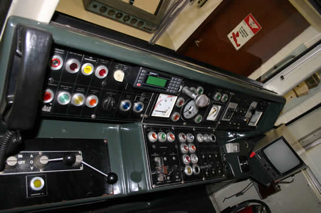
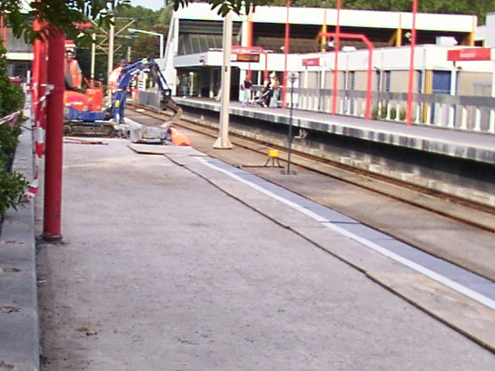
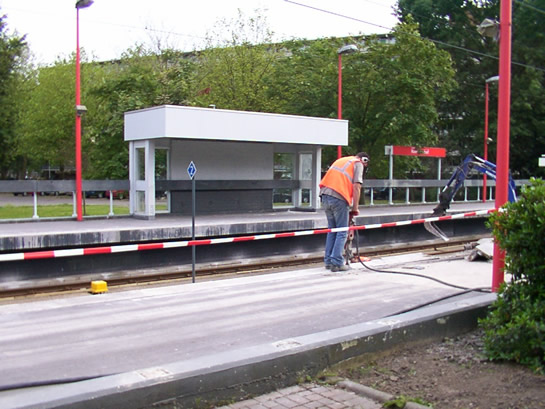
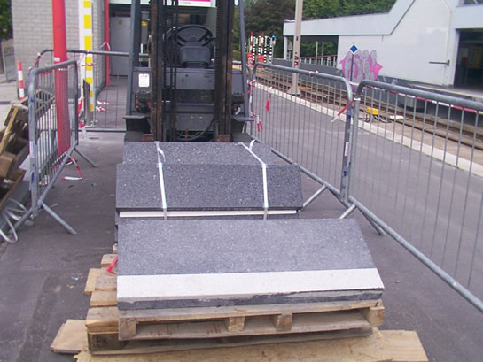
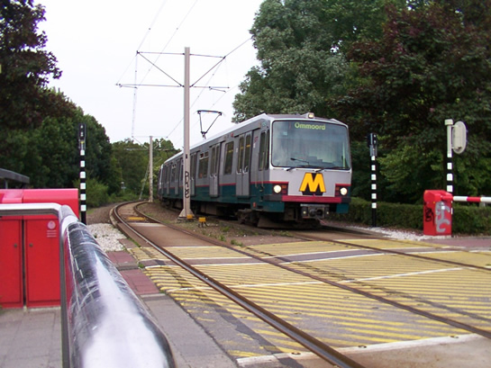
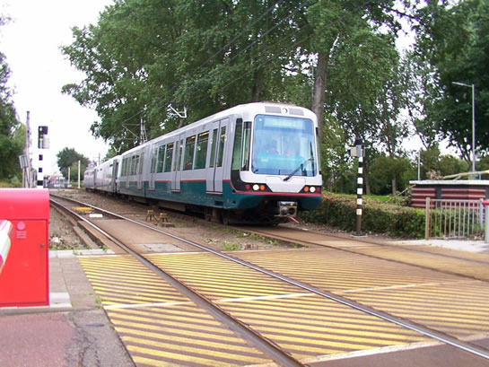

Ook metrorijtuig 5111 bestaat nog en ander nieuws...
- donderdag 11 december 2008 22:05
- Geschreven door Joachim
In het Brabantse Moerstraten, een gehucht op zich met niet meer dan een kroeg, een hoofdstraat en een kerk is nog een deel van een oud Rotterdams metrostel aanwezig. Ja, je leest het goed, de wonderen zijn de wereld nog niet uit. Bij het electronicabedrijf AST Electronica Moerstraten is de kop van metrostel 5111 nog aanwezig. De kop staat in een garage, bij drie vluchtsimulatoren. Het idee is om van de 5111 een volwaardige metrosimulator te maken. De complete Type M's zijn nog steeds de 5024, 5110 en 5051.
De kop van de metro is afgezaagd van de B-bak, zodanig dat de eerste instapdeur er nog inzit, maar niet geheel dicht kan. Er zitten geen draaistellen noch koppeling onder de kop van het metrostel. Retmetro.nl bezocht gisteren Moerstraten en we maakten de volgende foto's:

5111B bestaat nog. Hier en daar is de kop wat bijgelakt.

De achterzijde, zoals je kan zien aan de onderkant en bovenkant is de kop er geheel afgezaagd. Vanaf juli wordt er begonnen met de verlenging van het metrostel, er wordt dan een stuk van 20 centimeter aangebouwd. O.a. het dak wordt dan weer intact gemaakt en zo kunnen de TL-balken weer opgehangen worden.

De cabine is nog helemaal intact. Het enige wat nog ontbreekt is als uitzicht een stuk spoor.
Enkelspoorbedrijf Alexander - Binnenhof
In verband met werkzaamheden aan de perronrand van het station Romeynshof rijdt in de avonduren de metro richting Ommoord enkelsporig. De metro's lopen over bij wisselcomplex Alexander 1. De vertraging die hierdoor ontstaat is klein. De metro's naar Zevenkamp rijden wel gewoon op het normale spoor naar hun eindbestemming.
De werkzaamheden aan de perronrand vallen onder de revitalisatie van station Romeynshof. Het valt te verwachten dat ook de perronrand van spoor 1 in de avonduren wordt vernieuwd, daardoor kan het dus voorkomen dat er enkelspoorbedrijf wordt gereden van Binnenhof naar Alexander via spoor 2. Kortom: op de station Romeynshof en Graskruid er even rekening mee houden dat je in de avonduren de metro op een verkeerd spoor kan tegenkomen. Gisteravond werden de volgende foto's gemaakt:

De nieuwe perronrand ligt al deels op het station(niet op regelmatigheid letten)...

De oude perronrand wordt gesloopt.

Dezelfde perronranden als die op de Binnenhof gebruikt worden.

In verband met de werkzaamheden wordt er gebruik gemaakt van één spoor.

ATB Signalering
Gisteravond werd korte tijd het signaal 20 permissief ontvangen tussen station Schenkel en kruising Prins Alexanderlaan, spoor 1. Hierdoor mocht niet harder dan 20 kilometer per uur gereden worden. Ook op station Delfshaven wordt bij het binnenrijden van het station af en toe een signaal van 20 permissief ontvangen, op spoor 1.
Na de software-update van de Alstom-ATB in de nacht van 26 op 27 juni kan er nu op station de Akkers binnengereden worden met een groene signalering in plaats van het 10-absoluutsignaal wat eerst in de sectie gegeven werd. Dit komt de exploitatie ten goede, omdat er een betere doorstroming is. Meer over ATB weten? Klik hier!